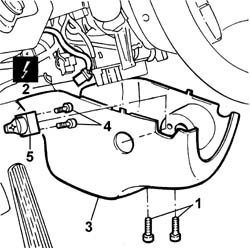

4110A24 Electric steering wheel position CONTROL - R.R.
- Path
- Procedures > 41 STEERING > 4110 steering control and linkage > 4110A steering control > 4110A24 Electric steering wheel position CONTROL - R.R.
- Kind
- repair procedure (removal / refitting; the operation number is the code)
- Applies to
- all engines; all production periods
- Interactive page
- https://sloeber94.github.io/elrnDB-lThss/en/#/172104
Applies to: all engines; all production periods
 Removing
Removing
 Refitting
Refitting- Open the boot and disconnect the negative battery terminal.
1. Undo the bolts fixing the lower part of the steering column cover.
- Remove the cover.
2. Disconnect the electrical connector.
 | Description | Connector |
|---|---|---|
2 | Steering wheel adjustment control unit | H093 |
3. Remove the lower part of the cover
4. Undo the bolts fixing the steering wheel adjustment controls from the steering column lower cover.
5. Remove the steering wheel adjustment controls.

Applies to: all engines; all production periods
Refitting
Removing- Fit the steering wheel adjustment controls, tightening the bolts fixing it to the steering column lower shield.
- Connect the electrical connector for the steering wheel adjustment controls.
| Description | Connector |
|---|---|---|
. | Steering wheel adjustment control unit | H093 |
- Fit the lower part of the steering column shield tightening the fixing bolts.
- Connect the negative battery terminal.